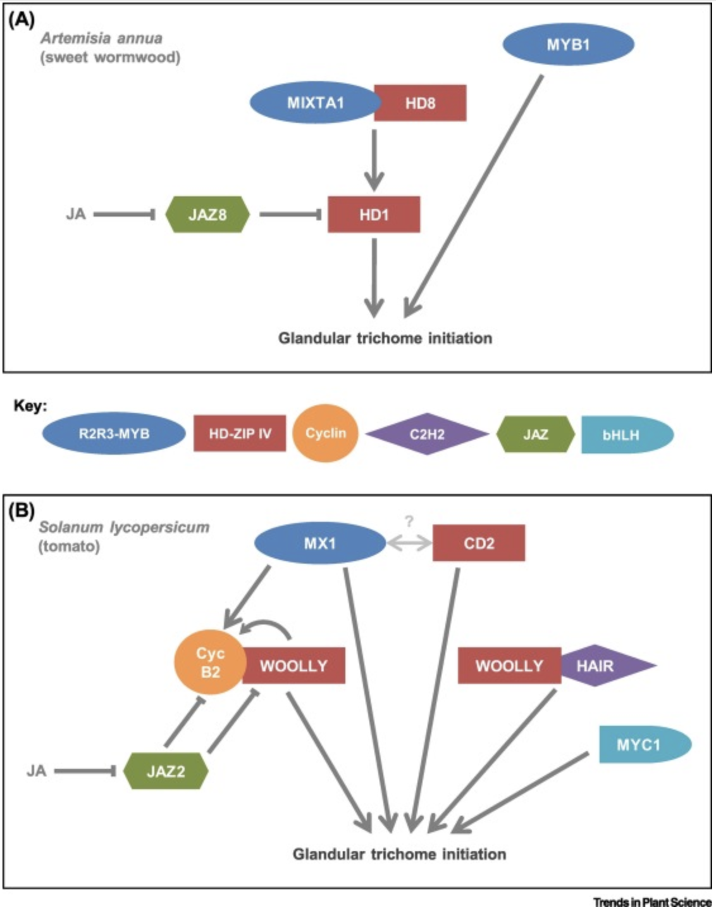

Trichome initiation in Solanum lycopersicon (tomato) and Artemis annua (wormwood)
Glandular trichomes are very important to plants in that they can deter insect damage. Also, the ability of plant grandular trichomes to generate a variety of useful compound and sequester them out on the tips of trichomes where they can easily be harvested has engendered much research into the idea of plants as chemical factories. Tomato and wormwood are two plants being studied as such factory candidates[Glas et al. 2012].
Comparing the trichome density regulation in Arabidopsis thaliana to that in tomato and wormwood is a bit of a stretch, as it is unclear to what extent those trichomes are even homologous structures, as many of them are multicellular, glandular and have different shapes. Still, the control of their density could have a similar basis. For example, in wormwood (Artemisia annua), the gene AaMYB1 positively regulates trichome initiation. Its ortholog in A. thaliana is AtMYB61. It also positively regulates trichome initiation (in A. thaliana) [Chalvin, et al., 2020]. However, Clavin et al. do not mention tomato having any such regulation, and other evidence shows that wormwood and tomato, both in the same family (Solanaceae) have many differences as well as similarities in the regulation of trichome initiation [Chalvin, et al., 2020].

“Simplified Model of Glandular Trichome Initiation in Sweet Wormwood (Artemisia annua) and Tomato (Solanum lycopersicum).
(A) In A. annua, the R2R3-MYB MIXTA1/HD-ZIP IV HD8 complex activates HD1 to induce the glandular trichome initiation. The JA signaling repressor JAZ8 represses HD1 transcriptional activity, thereby inhibiting glandular trichome initiation. In the presence of JA, JAZ8 is degraded by the proteasome system, leading to the release of HD1 and the glandular trichome initiation. In addition, MYB1 also induced the initiation of glandular trichomes. (B) In S. lycopersicum, the HD-ZIP IV transcription factor WOOLLY interacts with the B-type cyclin CycB2 and with the C2H2 zinc-finger protein HAIR to initiate the glandular trichome development. A HAIR-WOOLLY-CycB2 complex may exist, but has not been detected yet. The bHLH transcription factor MYC1, the R2R3-MYB transcription factor MX1, and the HD-ZIP IV transcription factor CD2 also participate in the glandular trichome initiation. CD2 is the closest tomato homolog of the transcription factor HD8 of A. annua. Like HD8, CD2 may interact with a MIXTA-like protein, maybe MX1. MX1 and WOOLLY both induce the expression of CycB2. As in A. annua, the JA signaling repressor JAZ2 inhibits the expression of WOOLLY and CycB2 expression. In the presence of JA, JAZ2 is degraded, leading to the initiation of glandular trichomes. Abbreviations: HD, HOMEODOMAIN PROTEIN; HD-ZIP IV, HOMEODOMAIN LEUCINE ZIPPER IV; JA, jasmonate; JAZ, JASMONATE ZIM DOMAIN PROTEIN; bHLH, basic HELIX LOOP HELIX; MX1, MIXTA-like 1; CD2, CUTIN DEFICIENT 2.
” [Chalvin, et al., 2020]